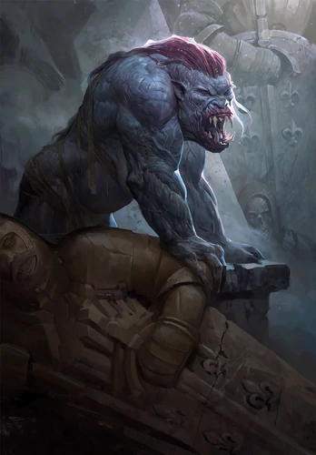
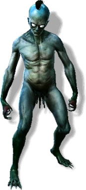
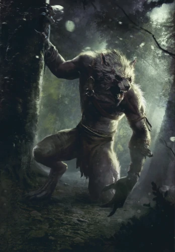

A striga (Polish: strzyga) is a human woman transformed into a monster by a curse. She is
filled with hatred towards all living beings, devouring them without a second thought. She
only comes out on a full moon to hunt, fighting with incredible speed and strength. King
Foltest would sometimes tie criminals up to stakes in the ground, who would serve as a meal
for the beast.
There is not much known about the curse that turns females into striga. The only well-documented
example of a striga's lifetime was that of Adda the White, daughter of Foltest, king of Temeria.
She was cursed prior to her birth, then born a striga. She and her mother, who did not survive the
birth, were laid to rest in a single tomb. For seven years she grew inside the sarcophagus, only
to emerge a creature of predatory instinct with the size and skill to carry it out.

Drowners, also known as muire d'yaeblen in Skellige or vodniks, inhabit both natural and
artificial bodies of water, from rivers and lakes to mill ponds and city sewers. It is
commonly thought that these creatures are drowned men, somehow arisen from the dead to
prey on the living. This opinion is as widespread as it is false, for the beasts are in
fact another post-Conjunction relic.
The drowner, a frightful creature of mud and scum,
drags people down into mires and bubbling eddies. It feeds on young women who bathe in rivers
and on occasion will pull men off their horses or carts as they cross a bridge or weir. Drowners
arise from the bodies of villains who meet their end in running water or in undertows that appear
after storms. These watery creatures embody the spirits of those who can not rest after death and
are sometimes born of fetuses aborted by magical means. They are ugly in appearance, skinny, tall
and bony. Their bodies are slimy and green, as is their hair. Wherever a drowner steps, pools of
their slimy substance form. This creature can be fought using ordinary weapons.

Werewolves are therianthropes who transform into wolves or half-wolves.[1] As other such
creatures, they are hardly hurt by steel but very vulnerable to silver.
There are two most common ways to aquire lycanthropy: the first one through a curse[2] and the
second is to simply have a werewolf parent.[1][3] Being bitten by another werewolf, while
popular in folk tales, gives only a very small chance of becoming one in reality[2], though
it is still recommended to get magical treatment.[4] Those who are born as werewolves are
able to fully control their shapeshifting abilities,[1][3] while those cursed or bitten
change into their werewolf form only during the full moon.[2] Those who became werewolves
during their lives however are the only ones who can be cured.[3] The wolfsbane is said
to mitigate the illness' symptoms.
Therianthropy diseases, including lycanthropy, appeared
in the world after the Conjunction of the Spheres, affecting nonhuman and early human populations
alike.[2] According to Herbolth, lands in the Toina valley, also called the Dogbane, were plagued
by werewolves before the Nordling colonization.[5]
Werewolves have a legendary sense of smell,
exceptional even amongst real wolves.[1] Lycanthropes are usually on good terms with other
canines, but hate werecats.[2]